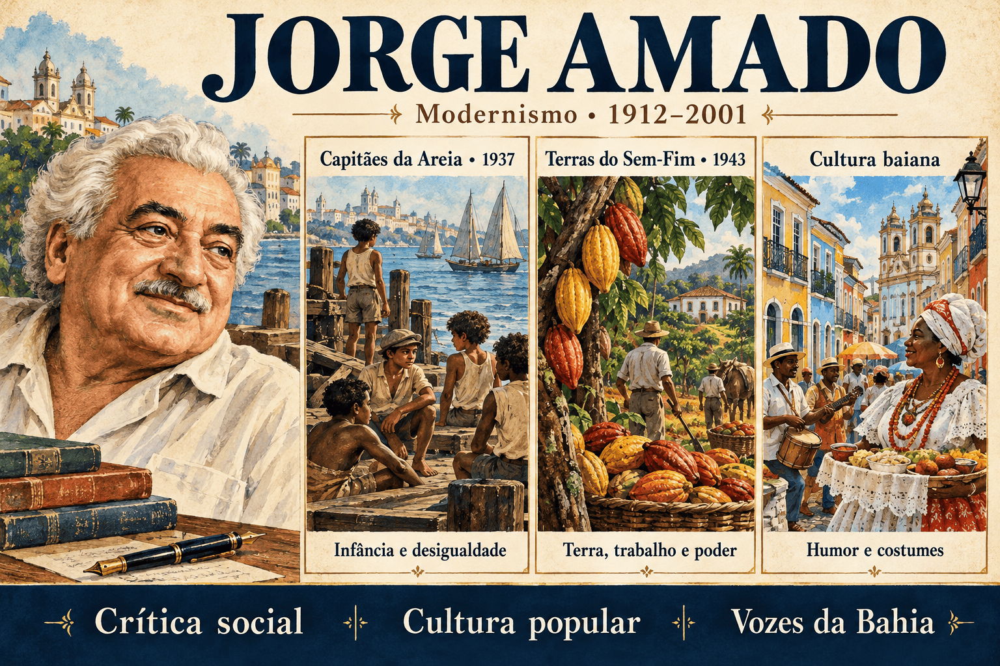

Jorge Amado: biografia, obras, Capitães da Areia e cultura baiana
Crianças vivendo em um trapiche abandonado, trabalhadores submetidos à exploração, coronéis em disputa pela terra e mulheres que desafiam convenções: a literatura de Jorge Amado reúne personagens e conflitos que colocam em discussão diferentes formas de viver na sociedade brasileira.
Associado ao Romance de 30, o escritor construiu uma obra extensa, profundamente ligada à Bahia. Seus livros combinam denúncia social, narrativa envolvente, humor, oralidade e atenção à cultura popular.
Neste conteúdo, você estudará sua trajetória, suas características literárias e quatro obras centrais: Capitães da Areia, Terras do Sem-Fim, Gabriela, Cravo e Canela e Dona Flor e Seus Dois Maridos.

Jorge Amado em resumo
- Nome completo: Jorge Leal Amado de Faria.
- Nascimento: 10 de agosto de 1912, em Ferradas, município de Itabuna, Bahia.
- Falecimento: 6 de agosto de 2001, em Salvador.
- Vinculação literária: segunda geração modernista e Romance de 30.
- Estreia em romance: O País do Carnaval, de 1931.
- Temas recorrentes: desigualdade, trabalho, infância desamparada, cultura popular, racismo, desejo e poder.
- Espaços importantes: Salvador e a região cacaueira do sul da Bahia.
- Recursos expressivos: oralidade, lirismo, humor, sátira e construção de painéis sociais.
Quem foi Jorge Amado?
Jorge Amado nasceu na Fazenda Auricídia, em Ferradas, no município de Itabuna. Passou parte da infância em Ilhéus e viveu experiências de formação em Salvador. A região do cacau e a vida urbana baiana se tornariam referências importantes de sua ficção.
Começou a trabalhar na imprensa ainda adolescente e participou da Academia dos Rebeldes, grupo ligado à renovação literária na Bahia. Formou-se em Direito em 1935, mas sua carreira se concentrou na escrita.
Sua trajetória também incluiu militância comunista, exílio e atuação parlamentar. Eleito deputado federal por São Paulo em 1945, participou da Assembleia Constituinte de 1946. Em 1961, ingressou na Academia Brasileira de Letras.
A relação com a escritora Zélia Gattai marcou sua vida pessoal e cultural. Seus romances circularam em diferentes países e deram origem a adaptações para cinema, televisão e teatro.
Autor e narrativa: conhecer a biografia ajuda a contextualizar os livros, mas personagens e narradores não devem ser tratados como porta-vozes automáticos do escritor.
Jorge Amado e o Romance de 30
A segunda geração modernista ampliou a investigação das desigualdades, das relações de trabalho e dos conflitos individuais. Jorge Amado participa desse movimento ao colocar grupos socialmente marginalizados no centro de suas histórias.
Sua obra mostra que a prosa regionalista não se limita ao campo. O espaço urbano, com seus bairros populares, portos, moradias e instituições, também permite examinar exclusão e relações de poder.
A Bahia não funciona apenas como cenário. Modos de falar, práticas religiosas, atividades econômicas e formas de sociabilidade participam da construção dos conflitos e das personagens.
Uma divisão didática da produção
- Maior explicitação do engajamento social: romances das décadas de 1930 e 1940 destacam exploração, pobreza, organização coletiva e disputas políticas.
- Ampliação da crítica de costumes: em obras posteriores, ganham espaço o humor, a sensualidade, o cotidiano e as tensões entre desejo e convenções.
Essa divisão ajuda a estudar mudanças de ênfase, mas não estabelece uma separação absoluta. Lirismo e cultura popular já aparecem nos primeiros livros, enquanto a crítica social permanece em romances posteriores.
Características literárias de Jorge Amado
1. Centralidade de personagens populares
Trabalhadores, crianças em situação de rua, moradores de áreas pobres e pessoas afastadas dos espaços oficiais de prestígio ocupam posições centrais. A narrativa apresenta afetos e projetos que discursos sociais dominantes frequentemente ignoram.
2. Crítica às relações de poder
Coronelismo, exploração econômica, repressão e preconceito aparecem em situações concretas. Os conflitos permitem perguntar quem controla recursos, define regras e consegue fazer sua versão dos acontecimentos prevalecer.
3. Oralidade e proximidade com o leitor
Diálogos, expressões correntes e procedimentos associados ao ato de contar histórias contribuem para o ritmo narrativo. Essa proximidade resulta de escolhas literárias.
4. Humor e sátira
O riso pode expor a distância entre a respeitabilidade declarada e a conduta das personagens. A sátira também questiona autoridades, convenções e hierarquias.
5. Cultura afro-brasileira e religiosidade
Práticas religiosas, saberes e vínculos comunitários participam da vida narrada. Uma leitura atenta observa sua função nos acontecimentos e evita reduzi-los a decoração exótica.
6. Diversidade de registros
A escrita pode combinar denúncia, sentimentalidade, lirismo, comicidade e acontecimentos sobrenaturais. Cada romance estabelece uma relação própria entre esses procedimentos.
Principais obras de Jorge Amado
| Obra | Ano | Eixo de leitura |
|---|---|---|
| O País do Carnaval | 1931 | Estreia em romance e investigação de conflitos individuais e culturais. |
| Cacau | 1933 | Trabalho e exploração na sociedade cacaueira. |
| Suor | 1934 | Pobreza, convivência e vida urbana. |
| Jubiabá | 1935 | Trajetória individual, relações raciais e experiência popular. |
| Mar Morto | 1936 | Trabalho, afetos e universo marítimo. |
| Capitães da Areia | 1937 | Infância desamparada, violência e solidariedade. |
| Terras do Sem-Fim | 1943 | Disputas pela terra e expansão do cacau. |
| São Jorge dos Ilhéus | 1944 | Transformações econômicas da região cacaueira. |
| Gabriela, Cravo e Canela | 1958 | Modernização de Ilhéus, desejo e convenções sociais. |
| Dona Flor e Seus Dois Maridos | 1966 | Vida urbana, casamento, desejo e sobrenatural. |
| Tenda dos Milagres | 1969 | Cultura afro-brasileira, racismo e reconhecimento intelectual. |
Capitães da Areia: resumo e análise
Publicado em 1937, Capitães da Areia acompanha crianças e adolescentes que vivem em um trapiche abandonado, em Salvador. O grupo enfrenta carências materiais e se envolve em furtos, enquanto constrói vínculos de convivência.
O romance aproxima o leitor de seus integrantes, apresentando diferenças de temperamento, lembranças, desejos e possibilidades de futuro. Essa individualização contrasta com o tratamento que reduz o grupo a uma ameaça anônima.
Infância desamparada e olhar social
Uma questão central é a disputa sobre como compreender essas crianças. Quando são vistas apenas como infratoras, suas necessidades e histórias desaparecem da discussão.
A narrativa desloca a atenção para as condições em que vivem. Essa aproximação permite examinar abandono e repressão sem transformar todos os seus atos em exemplos de comportamento.
As diferentes vozes da abertura
Antes do desenvolvimento principal da história, o livro apresenta uma sequência que imita notícia jornalística e correspondências. Essas vozes oferecem versões concorrentes sobre os meninos e as instituições.
A montagem convida o leitor a investigar interesses e responsabilidades. O discurso publicado em jornal não deve ser confundido automaticamente com a perspectiva do romance.
Pergunta de leitura: quem tem acesso à palavra pública e como essa posição influencia a imagem construída sobre crianças socialmente marginalizadas?
Personagens e diferentes trajetórias
| Personagem | Aspectos para observar |
|---|---|
| Pedro Bala | Liderança, pertencimento ao grupo e desenvolvimento de uma consciência ligada à ação coletiva. |
| Professor | Leitura, imaginação e possibilidades de expressão artística. |
| Sem-Pernas | Marcas da violência, ressentimento e dificuldade de confiar nos outros. |
| Pirulito | Experiência religiosa e procura de um caminho próprio. |
| Dora | Afeto, cuidado, pertencimento e expectativas de gênero no interior do grupo. |
Solidariedade e conflito
A convivência permite a formação de laços que respondem à ausência de proteção. O grupo oferece reconhecimento e uma experiência de pertencimento.
Esses vínculos, porém, não eliminam tensões e violências. A análise ganha profundidade quando observa como necessidades afetivas, estratégias de sobrevivência e práticas problemáticas coexistem.
Espaço urbano e exclusão
A cidade é vivida de maneiras desiguais. O contraste entre espaços de prestígio e lugares de abrigo precário ajuda a compreender quem pode circular, permanecer e ser reconhecido.
O trapiche funciona como um espaço de convivência e proteção relativa, ao mesmo tempo que evidencia a precariedade da situação das personagens.
O ciclo do cacau em Jorge Amado
A expressão ciclo do cacau designa um conjunto de obras relacionadas à formação e às transformações da sociedade cacaueira do sul da Bahia.
O interesse não se limita à produção agrícola. Terra, trabalho, comércio, prestígio e violência formam uma rede de relações que interfere na vida individual.
- Trabalho: condições de vida de quem participa da produção.
- Propriedade: concentração e disputa pelo controle da terra.
- Poder: relações entre riqueza, autoridade e influência política.
- Transformação econômica: mudanças nas formas de acumulação e nas hierarquias locais.
Terras do Sem-Fim: propriedade e violência
Publicado em 1943, Terras do Sem-Fim apresenta disputas pela terra no sul da Bahia, envolvendo os irmãos Badaró e o coronel Horácio da Silveira. Conflitos econômicos se entrelaçam com relações políticas e amorosas.
O desejo de ampliar a produção cacaueira transforma a terra em objeto de conquista. A violência participa do processo de enriquecimento e da consolidação de posições sociais.
Como interpretar o coronelismo?
Na leitura, o termo deve ser relacionado ao poder local: capacidade de mobilizar dependentes, influenciar decisões e impor interesses. O título de coronel ganha sentido dentro dessa rede de autoridade.
Um caminho de análise é perguntar como interesses privados atravessam os espaços que deveriam assegurar regras coletivas. A violência não aparece somente como temperamento individual; integra uma forma de disputar recursos e conservar poder.
O custo humano do enriquecimento
A expansão econômica pode produzir narrativas de progresso e prestígio. O romance permite examinar o que essas narrativas deixam em segundo plano: ameaças, perdas e vidas submetidas às disputas.
Para comparar: enquanto Capitães da Areia focaliza a exclusão urbana, Terras do Sem-Fim investiga relações de propriedade e violência na sociedade cacaueira.
Gabriela, Cravo e Canela: modernização e costumes
Publicado em 1958, Gabriela, Cravo e Canela se passa em Ilhéus, na década de 1920. A relação entre Gabriela e Nacib se desenvolve em uma cidade enriquecida pelo cacau e atravessada por disputas políticas.
A mudança econômica convive com expectativas rígidas sobre comportamento e sexualidade. A trajetória da protagonista permite discutir a tentativa de ajustar uma pessoa às exigências da respeitabilidade social.
A economia e a moral mudam no mesmo ritmo?
A pergunta orienta a interpretação: crescimento material não implica transformação imediata dos valores. O romance aproxima disputas pelo futuro da cidade de conflitos sobre casamento e controle da vida feminina.
O humor ajuda a expor contradições entre condutas e discursos. Também é produtivo examinar como a liberdade de Gabriela é narrada e quais imagens de gênero e raça participam de sua caracterização.
Localização correta: Gabriela se passa em Ilhéus. Salvador é o espaço central de Capitães da Areia e Dona Flor.
Dona Flor e Seus Dois Maridos: desejo e convenções
Publicado em 1966, Dona Flor e Seus Dois Maridos acompanha uma professora de culinária em Salvador. Após a morte de Vadinho, seu primeiro marido, Flor se casa com o farmacêutico Teodoro.
As duas relações apresentam experiências distintas: a intensidade e a instabilidade de Vadinho contrastam com a segurança e a regularidade de Teodoro. O retorno do primeiro marido como fantasma modifica o conflito.
O sobrenatural na composição do romance
A presença do morto integra o cotidiano narrado e permite explorar desejo, memória e convenções. A interpretação pode examinar como o acontecimento é recebido pelas personagens e pelo narrador.
O recurso não exige uma explicação médica ou policial. Seu funcionamento depende do universo ficcional e dos efeitos de humor e ambiguidade que produz.
Por que “crônica de costumes”?
Embora seja um romance, a obra oferece um painel de hábitos, relações e julgamentos da vida urbana. A expressão descreve essa atenção aos costumes, sem alterar seu gênero literário.
Cultura afro-brasileira: presença e leitura crítica
A obra amadiana contribuiu para dar visibilidade literária a práticas e personagens afro-brasileiros. A análise deve observar como essa presença organiza relações, acontecimentos e formas de compreender o mundo.
Também cabe perguntar quem descreve essas experiências, quais estereótipos podem ser reproduzidos e como raça, classe e gênero se articulam. Reconhecer a importância de uma obra não impede o exame crítico de suas representações.
Comparação entre as obras
| Obra | Espaço | Conflito de destaque |
|---|---|---|
| Capitães da Areia | Salvador. | Infância desamparada, repressão e pertencimento. |
| Terras do Sem-Fim | Sul da Bahia. | Conquista da terra, coronelismo e violência. |
| Gabriela, Cravo e Canela | Ilhéus. | Modernização econômica e permanência de convenções. |
| Dona Flor e Seus Dois Maridos | Salvador. | Desejo, casamento, respeitabilidade e sobrenatural. |
Jorge Amado no ENEM, no PAES UEMA e nos vestibulares
O estudo do autor pode articular conhecimentos sobre o Modernismo à interpretação dos recursos de cada texto. Identificar um problema social é apenas o começo da análise.
- Observe a perspectiva: quem descreve ou julga determinada personagem?
- Relacione espaço e conflito: como cidade, terra ou moradia participam da história?
- Analise o humor: que contradição ou autoridade ele expõe?
- Examine vozes sociais: como imprensa, instituições e personagens constroem versões diferentes?
- Distinga os períodos: a associação ao Romance de 30 não significa que todos os livros tenham sido publicados nessa década.
Erros de interpretação que merecem atenção
- Tratar toda a obra como uma produção de estilo único.
- Afirmar que o humor elimina a crítica social.
- Situar Gabriela em Salvador.
- Confundir a notícia da abertura de Capitães da Areia com a posição automática do narrador principal.
- Reduzir a cultura afro-brasileira a elemento decorativo.
- Considerar que representar personagens marginalizados equivale a aprovar todos os seus atos.
Quiz sobre Jorge Amado
Questões de interpretação — nível avançado
Questão 1 — A abertura de Capitães da Areia apresenta textos que imitam notícia jornalística e correspondências. Esse procedimento permite:
Questão 2 — Ao apresentar histórias, desejos e diferenças entre os integrantes do grupo de Capitães da Areia, o romance:
Questão 3 — Em Terras do Sem-Fim, a disputa pela terra permite investigar:
Questão 4 — A relação entre modernização e costumes em Gabriela pode ser compreendida pela ideia de que:
Questão 5 — Em Dona Flor e Seus Dois Maridos, o retorno de Vadinho como fantasma:
Questão 6 — Uma leitura consistente da trajetória de Jorge Amado reconhece que:
Resumo final para revisão
- Jorge Amado é um autor central do Romance de 30, com produção extensa nas décadas seguintes.
- Capitães da Areia aborda infância desamparada, repressão e solidariedade em Salvador.
- O ciclo do cacau permite estudar trabalho, propriedade e transformação econômica.
- Terras do Sem-Fim relaciona disputa fundiária, coronelismo e violência.
- Gabriela se passa em Ilhéus e aproxima modernização e costumes.
- Dona Flor articula desejo, casamento, humor e sobrenatural.
- Cultura popular e relações de poder atravessam diferentes momentos da obra.
Perguntas frequentes sobre Jorge Amado
Quem foi Jorge Amado?
Jorge Amado foi um escritor baiano, romancista, jornalista e memorialista. Sua obra aborda desigualdade, relações de poder, cultura popular, religiosidade e costumes.
A qual geração modernista pertence Jorge Amado?
Jorge Amado está associado à segunda geração modernista e ao Romance de 30. Sua produção continuou nas décadas seguintes, com mudanças de tom e de procedimentos narrativos.
Qual é o tema de Capitães da Areia?
Publicado em 1937, o romance acompanha crianças e adolescentes que vivem nas ruas de Salvador, abordando abandono, violência, solidariedade, desejo de liberdade e desigualdade social.
O que é o ciclo do cacau?
É uma designação para obras relacionadas à sociedade cacaueira do sul da Bahia, com temas como trabalho, disputas pela terra, coronelismo e transformação econômica.
Qual é o conflito central de Terras do Sem-Fim?
O romance apresenta disputas violentas pela posse da terra no sul da Bahia, envolvendo os irmãos Badaró e o coronel Horácio da Silveira, em um contexto de expansão da lavoura cacaueira.
Gabriela se passa em Salvador?
Não. Gabriela, Cravo e Canela é ambientado em Ilhéus, na década de 1920. O livro foi publicado em 1958.
Como o sobrenatural aparece em Dona Flor e Seus Dois Maridos?
O retorno de Vadinho como fantasma integra o cotidiano narrado e permite explorar desejo, memória e convenções sociais, em uma composição marcada pelo humor.
Jorge Amado abandonou a crítica social nos romances posteriores?
Não. A ampliação do humor, da sensualidade e da crítica de costumes não elimina a discussão de desigualdades, preconceitos e relações de poder.
Conteúdos relacionados
Conclusão
Jorge Amado construiu uma literatura em que espaços populares e grupos marginalizados ocupam o centro da narrativa. Seus romances aproximam sobrevivência, desejo e relações de poder.
A leitura de sua obra pede atenção às diferenças entre os livros. A crítica pode se realizar pela denúncia direta, pela montagem de vozes, pelo humor ou pelo conflito entre costumes e experiências individuais.
Referências e leituras de apoio
- AMADO, Jorge. Capitães da Areia. 1937.
- AMADO, Jorge. Terras do Sem-Fim. 1943.
- AMADO, Jorge. Gabriela, Cravo e Canela. 1958.
- AMADO, Jorge. Dona Flor e Seus Dois Maridos. 1966.
- ACADEMIA BRASILEIRA DE LETRAS. Jorge Amado: biografia .
- ACADEMIA BRASILEIRA DE LETRAS. Jorge Amado: bibliografia .
- FUNDAÇÃO CASA DE JORGE AMADO. Acervo e informações sobre o escritor .
- COMPANHIA DAS LETRAS. Capitães da Areia .
- COMPANHIA DAS LETRAS. Terras do Sem-Fim .
- COMPANHIA DAS LETRAS. Gabriela, Cravo e Canela .
- COMPANHIA DAS LETRAS. Dona Flor e Seus Dois Maridos .